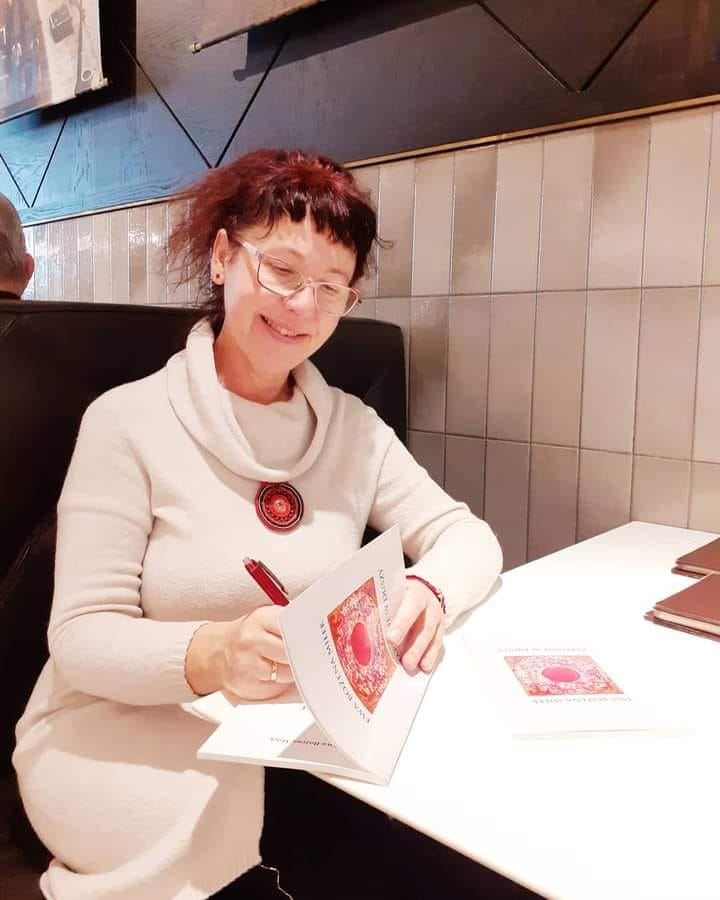
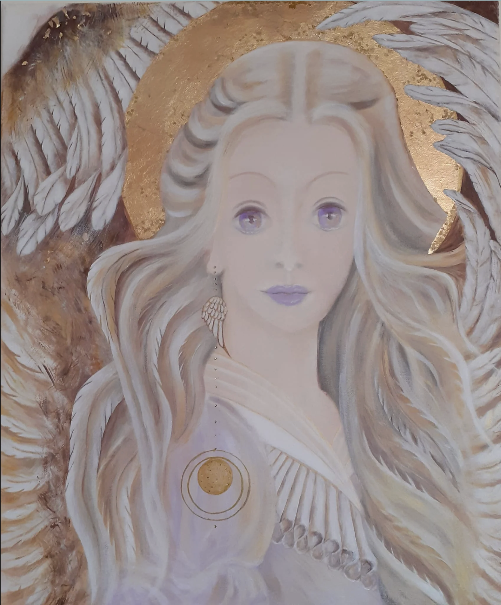

01
Mandale osobiste
Autorskie obrazy tworzone na indywidualne zamówienie — osobiste, partnerskie, ślubne i intencjonalne.
Zobacz szczegóły →Przestrzeń świadomego tworzenia
Tworzę Mandale i Anioły Opiekuńcze na indywidualne zamówienie, prowadzę warsztaty Vedic Art, malowanie na jedwabiu i przygotowuję portrety numerologiczne.
kolor • symbol • intuicja
Idź za głosem własnego serca — ono wie, co dla Ciebie jest najlepsze.
”Wybierz swoją ścieżkę
Każdy obszar łączy sztukę, skupienie i pracę z indywidualnym doświadczeniem człowieka.
Autorskie obrazy tworzone na indywidualne zamówienie — osobiste, partnerskie, ślubne i intencjonalne.
Zobacz szczegóły →Indywidualny obraz malowany w ciszy i skupieniu, wraz z opisem przygotowanym dla konkretnej osoby.
Zobacz szczegóły →Portrety numerologiczne w wersji podstawowej i mikro, opisujące m.in. drogę życia, talenty i cykle.
Zobacz szczegóły →Sześciodniowe warsztaty twórcze oparte na 17 Zasadach Vedic Art — bez potrzeby wcześniejszego doświadczenia malarskiego.
Poznaj warsztaty →Kameralny kurs, podczas którego tworzysz własny, ręcznie malowany szal z naturalnego jedwabiu.
Poznaj kurs →
Poznajmy się
Od wielu lat łączę twórczość z rozwojem wewnętrznym. Moją pasją jest malowanie, a Mandale i Anioły są ważną częścią tej drogi. Poprzez numerologię pomagam ludziom przyglądać się swoim talentom, możliwościom i życiowym cyklom.
Jestem nauczycielką Vedic Art od 2010 roku. Ukończyłam m.in. Studium Psychologii Psychotronicznej oraz Szkołę Sztuk Pięknych. W 2018 roku wydałam tomik wierszy „Zapisane w Duszy”.
Mandale
Mandale powstają na płótnie, warstwa po warstwie, w spokojnym i skupionym procesie. Każda realizacja jest indywidualna i otrzymuje krótki opis.

Anioł Opiekuńczy
Obraz malowany jest akrylem na płótnie 40×60 cm. Do pracy dołączany jest opis liczący około 6 stron.
Do realizacji potrzebne są: imię i data urodzenia. Orientacyjny czas realizacji: około 12 tygodni po wpłacie.
Poznaj AniołyVedic Art w Kręgu Kobiet
Vedic Art® to metoda rozwoju osobistego stworzona przez szwedzkiego artystę Curta Källmana. Warsztaty prowadzone przez Ewę składają się z 6 dni i obejmują całość stopnia I lub II.
Nie musisz „umieć malować”. Liczy się ciekawość procesu i gotowość do tworzenia.
Warsztat prowadzi przez kolejne zasady Vedic Art w spokojnym, twórczym rytmie.
Płótna, farby i narzędzia dobierasz do własnego procesu i własnej ekspresji.
Numerologia
Przejrzysta oferta bez konieczności przekopywania się przez długi opis.
MIKRO
około 15 stron • realizacja ok. 8 tygodni
PEŁNY
około 25 stron • realizacja ok. 12 tygodni
Kontakt
Napisz kilka słów o tym, czego szukasz. Ewa odpowie mailowo i podpowie dalsze kroki.
jakiej usługi dotyczy wiadomość i — jeśli już wiesz — dla kogo ma powstać praca.
Kontakt